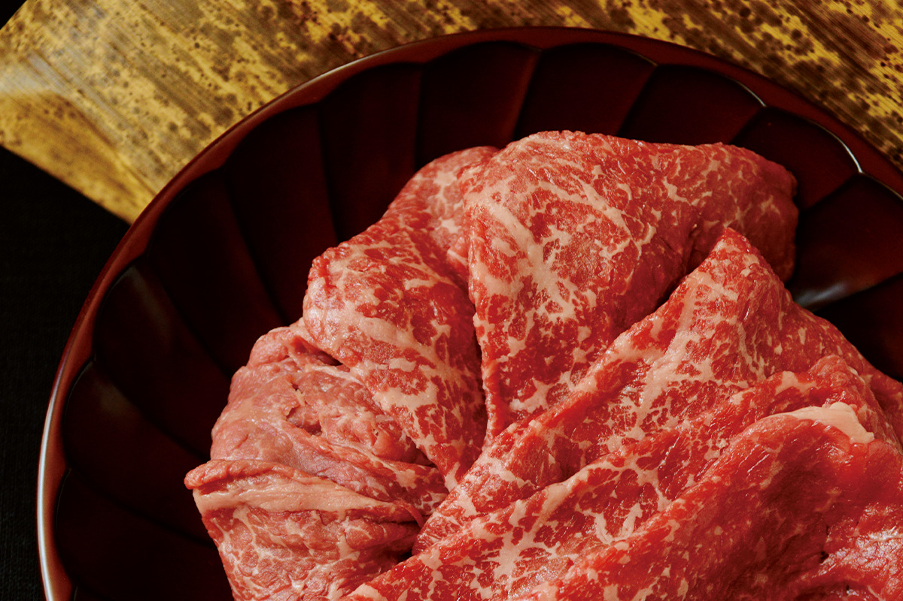
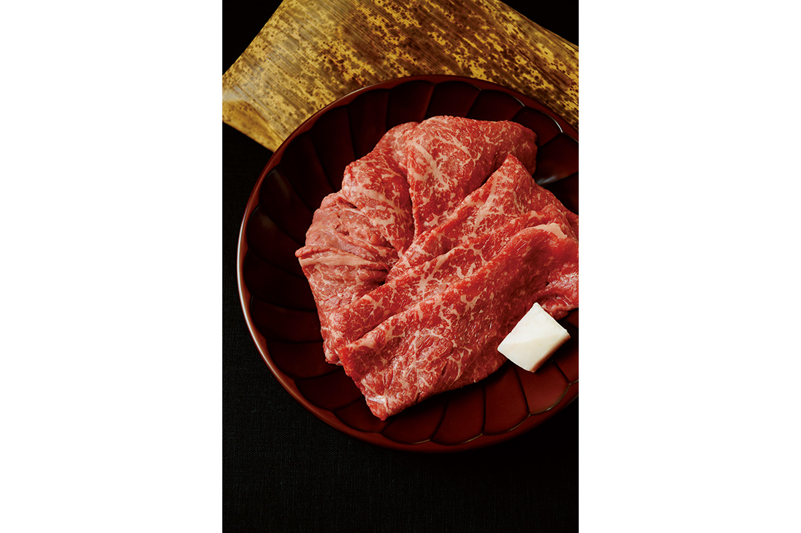
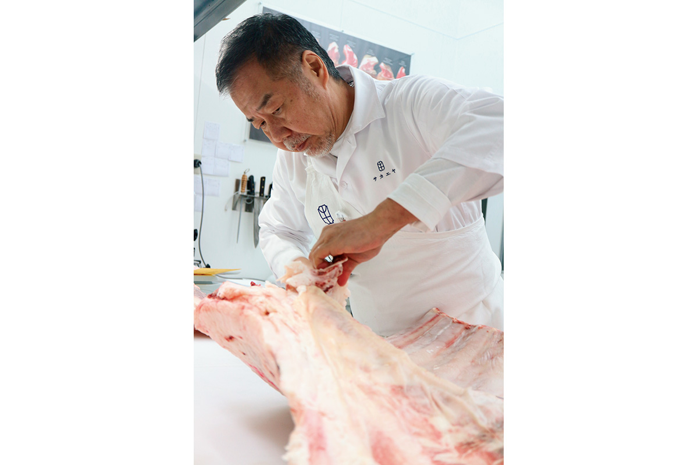
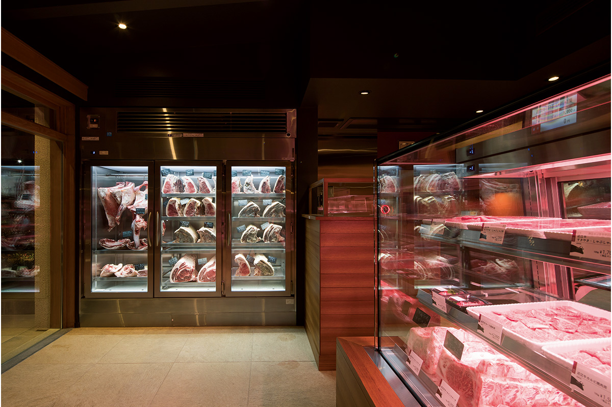
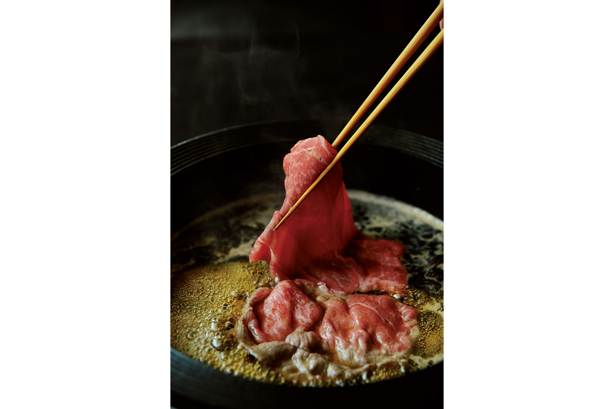
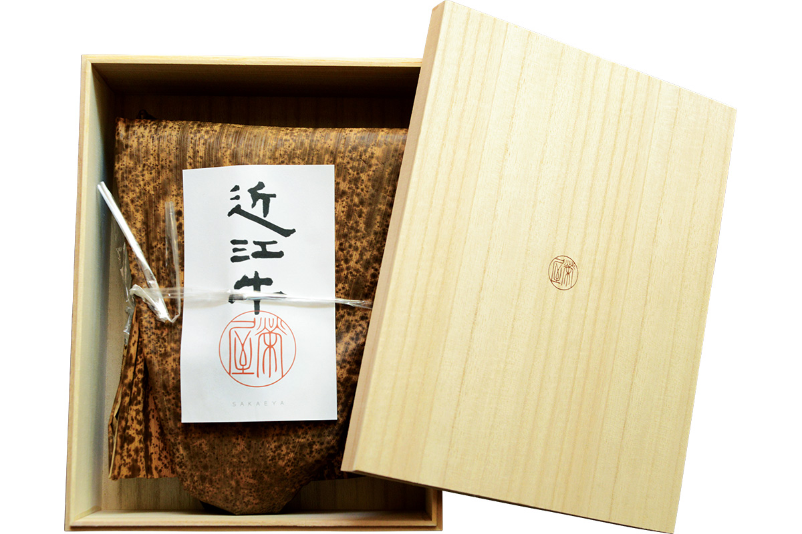

Префектура Сига · Кусацу · еда
Мясная лавка «Сакаэя» в Кусацу: говядина Оми, нарезанная для сукияки

В городе Кусацу на юге префектуры Сига работает мясная лавка, о которой знают повара по всей Японии. Фуд-журналист, автор книг о мясе, рассказывает, почему говядину для сукияки отсюда он считает лучшим подарком.
Подарок
Почему именно сукияки
Выбрать мясо в подарок так, чтобы не ошибиться, на самом деле очень трудно. В любимом ресторане хороший стейк приготовит повар, которому доверяешь. А что сделают с дорогим куском дома, угадать невозможно.
Более тысячи лет, вплоть до реформ эпохи Мэйдзи во второй половине XIX века, мясо в Японии было под запретом. Японцы так и не освоили мясо до конца, и сукияки, тонкие ломтики говядины, обжаренные в неглубоком котелке, стали тем блюдом, которое любой может приготовить вкусно. Это самая обжитая часть японской мясной культуры.
«Поэтому близким людям я дарю мясо для сукияки. И только то, с которым у меня самого были лучшие сукияки в жизни»
фуд-журналист
Такое мясо он нашёл в «Сакаэе», мясной лавке в Кусацу. Любители мяса знают её почти все. Журналист не раз заказывал здесь стейки, выдержанную говядину и субпродукты, но первая посылка с говядиной Оми для сукияки его поразила: жировых прожилок мало, а вкус исключительный.

Вкус
Мясо, от которого не устаёшь
Японскую говядину, особенно чёрную вагю с густым узором жира, как у высшей категории «A5», принято считать мясом как раз для сукияки. Журналист признаётся, что слишком жирное мясо не любит, хотя в сукияки и сябу-сябу ел его с удовольствием.
У густо мраморной корейки вкус достигает пика на первом ломтике. С мясом из «Сакаэи» всё иначе: первый ломтик насыщенный, а палочки тянутся за следующим снова и снова. Постное мясо, мелкие прожилки и жир здесь в точном равновесии. Постная часть мягкая и с естественным густым вкусом, жир насыщенный, но лёгкий и чистый, тяжести нет совсем.
В тот раз журналисту досталась корейка с фермы «Фудзии», которой хозяин «Сакаэи» особенно доверяет. Её владелец сам возделывает рисовые поля и луга, кормит быков рисовой соломой и кормовым рисом своего урожая и возвращает навоз на поля: замкнутое хозяйство, которым он занимается много лет. Быков около ста, ферма совсем небольшая. Журналист однажды побывал там и запомнил спокойный хлев, где рядом с быками зевала кошка.
Мастер
Ёсинобу Ниихо: «Я только режу»

«Насколько способ выращивания влияет на мясо, я не знаю. Но люди работают на совесть, вот и вкусно. По-моему, это само собой разумеется. Моё дело только разрезать то, что мне доверили. Хо-хо-хо»
Ёсинобу Ниихо
Скромничает он напрасно. Кроме умения выбрать мясо, у хозяина «Сакаэи» редкая техника нарезки: ломтики он режет так, будто впускает в них воздух. В этом «только разрезать» на деле очень много мастерства.
Культура есть тонко нарезанное мясо как отдельное блюдо есть только в Азии, а способ, при котором тонкий ломтик прогревают неравномерно и намеренно, как в сукияки, журналист встречал лишь в Японии.
После эпидемии коровьего бешенства в 2001 году Ёсинобу Ниихо объехал всех производителей говядины в префектуре Сига, чтобы узнать, какая ферма каких быков и какой породы растит и как. Теперь он покупает только туши быков, происхождение которых знает, целиком и на кости. В лавке четыре холодильные камеры с разными условиями. Туши висят там, а хозяин доводит мясо до готовности, представляя себе лица тех, кому его отправит.

«Наверное, он чувствует то же, что и мы, когда с любовью выбираем подарок близкому человеку. Это мясо как письмо, которому не нужны слова»
фуд-журналист
Секрет вкуса журналист называет так: работа, которая знает меру. Хозяин чувствует, куда может вырасти каждый кусок, и честно ведёт его к лучшему результату. Хорошее свежее мясо не трогают лишний раз, а то, которому идёт выдержка, выдерживают ровно столько, сколько нужно. Лишней работы ради собственной славы здесь нет.
История
Говядина Оми: 400 лет на бумаге
Говядина Оми входит в тройку самых знаменитых японских марок вагю. Её история записана в источниках на протяжении 400 лет, с эпохи Эдо (1603–1868), когда есть говядину было запрещено. Княжеству Хиконэ тогда разрешили держать скот: из бычьих шкур делали барабаны для сёгуната. Так в краю сложилась своя мясная культура, и сёгунам отсюда давно отправляли вяленую говядину и мясо, маринованное в мисо.
Когда-то говядиной Оми могли называть только быков породы из Тадзимы. Сегодня условие одно: это чёрная японская порода, которая дольше всего прожила в префектуре Сига. Ни категория, ни пол, ни то, телилась ли корова, значения не имеют. Поэтому честным фермерам никто не навязывает правил, не связанных со вкусом, и они могут растить действительно вкусную говядину. А значит, особенно важен знаток, который хорошо знает хозяйства и понимает, какой бык удался. Сейчас в Сиге выращивают около 7000 голов говядины Оми в год.
Дома
Как жарить сукияки

Журналист готовит сукияки, совмещая западный и восточный японские стили. Первый ломтик он как следует обжаривает, чтобы мясо было ароматным. Дома за каждым куском не уследишь, поэтому, когда в котелке появляются остальные продукты, он заливает приготовленный заранее соус варисита, смесь соевого соуса, сахара и бульона, и дальше ест сукияки как тушёное блюдо.
- Разогрейте котелок, смажьте его говяжьим жиром и разложите ломтики корейки.
- Полоской налейте на мясо густой соевый соус тамари, палочками рассыпьте сахар, разбавьте бульоном из комбу и обжарьте мясо до нужной степени.
- Добавьте остальные продукты и приправьте соусом варисита. Следующие ломтики готовятся где-то посередине между тушением и жаркой.

Подарочный набор для сукияки в 2021 году стоил от 4428 иен с налогом (доставка отдельно) за 300 г мяса, этого хватает на двоих или троих. Охлаждённое мясо нужно съесть за 5 дней, считая день отправки, замороженное хранится 30 дней. Заказать набор можно по телефону, по факсу или на сайте лавки. При заказе по телефону и факсу оплата только банковским переводом заранее.
«Сакаэя»
- Адрес
- префектура Сига, Кусацу, Оивакэ-минами, 5-11-13
- Телефон
- +81 77-563-7829
- Часы работы
- 10:00–18:00
- Выходные
- среда, четвёртый вторник месяца
- Цены / Вход
- подарочный набор для сукияки от 4428 иен с налогом за 300 г, доставка отдельно
- Сайт
- omi-gyu.com
Фото: Кэндзи Итано.